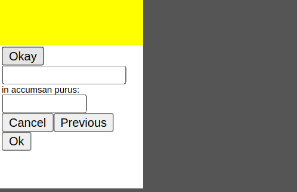
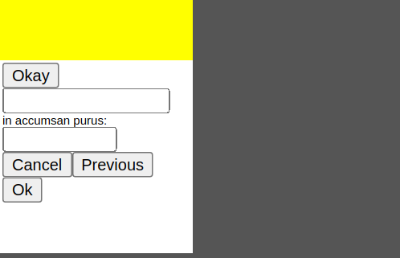
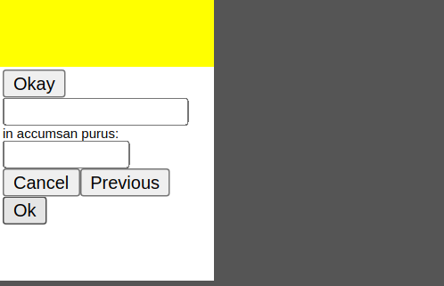

{
"event": "reset",
"goal": "Click on the \"Ok\" button.",
"screenshot": "0000.png",
"sha256": "de12410a5ceabfb6f904b9b6f2d18c2a60a68b4e22d3845a88cd1dd37d8a3af2"
}{
"event": "reset",
"goal": "Click on the \"Ok\" button.",
"screenshot": "0000.png",
"sha256": "de12410a5ceabfb6f904b9b6f2d18c2a60a68b4e22d3845a88cd1dd37d8a3af2"
}
{
"event": "source_action",
"action": {
"action": "CLICK",
"value": null,
"position": [
0.08,
0.26
]
},
"reward": 0.0,
"terminated": true,
"truncated": false,
"task_info": {
"REWARD_GLOBAL": -1,
"RAW_REWARD_GLOBAL": -1,
"REWARD_REASON": null,
"DONE_GLOBAL": true,
"EPISODE_ID": 1,
"TASK_READY": true
},
"executed_code": "mouse_click(39.84, 83.46000000000001)",
"execution_error": "",
"screenshot": "0001.png",
"sha256": "73fef87fb1b56b42a27ea9f0876682c2806c25e0c1eab15e2cd511bc6c0fc147"
}
{
"event": "restart_after_terminal",
"screenshot": "0002.png",
"sha256": "de12410a5ceabfb6f904b9b6f2d18c2a60a68b4e22d3845a88cd1dd37d8a3af2"
}{
"event": "candidate_prediction",
"prediction": {
"raw": "[0.089,0.76]",
"point": [
0.089,
0.76
],
"input_query": "The \"Ok\" button",
"inference_seconds": 0.3880192320793867,
"hit": true
}
}
{
"event": "candidate_action",
"action": {
"action": "CLICK",
"value": null,
"position": [
0.089,
0.76
]
},
"reward": 1.0,
"terminated": true,
"truncated": false,
"task_info": {
"REWARD_GLOBAL": 0.999575,
"RAW_REWARD_GLOBAL": 1,
"REWARD_REASON": null,
"DONE_GLOBAL": true,
"EPISODE_ID": 1,
"TASK_READY": true
},
"executed_code": "mouse_click(44.321999999999996, 243.96)",
"execution_error": "",
"screenshot": "0003.png",
"sha256": "2cc183c442edb7556e95985ded60110282e056f88e1bb243ce16a7d704a11687"
}{
"event": "episode_end",
"id": "click-button-8022-correction",
"task": "click-button",
"seed": 8022,
"head": "history_plain",
"conditional": true,
"success": true,
"reason": "success",
"source_steps": 1,
"repair_steps": 1,
"resets_after_failure": 1,
"source_model_calls_reused": 1,
"candidate_model_calls_reused": 1,
"additional_submit_calls": 0,
"prefix_matched": true,
"total_logical_model_calls": 2,
"recovery_mode": "restart_after_terminal"
}